4 Linear Models
Linear regression is the geocentric model of applied statistics. By “linear regression”, we will mean a family of simple statistical golems that attempt to learn about the mean and variance of some measurement, using an additive combination of other measurements. Like geocentrism, linear regression can usefully describe a very large variety of natural phenomena. Like geocentrism, linear is a descriptive model that corresponds to many different process models. If we read its structure too literally, we’re likely to make mistakes. But used wisely, these little linear golems continue to be useful. (p. 71)
4.1 Why normal distributions are normal
After laying out his soccer field coin toss shuffle premise, McElreath wrote:
It’s hard to say where any individual person will end up, but you can say with great confidence what the collection of positions will be. The distances will be distributed in approximately normal, or Gaussian, fashion. This is true even though the underlying distribution is binomial. It does this because there are so many more possible ways to realize a sequence of left-right steps that sums to zero. There are slightly fewer ways to realize a sequence that ends up one step left or right of zero, and so on, with the number of possible sequences declining in the characteristic bell curve of the normal distribution. (p. 72)
4.1.1 Normal by addition.
Here’s a way to do the simulation necessary for the plot in the top panel of Figure 4.2.
library(tidyverse)
# we set the seed to make the results of `runif()` reproducible.
set.seed(4)
pos <-
replicate(100, runif(16, -1, 1)) %>% # here's the simulation
as_tibble() %>% # for data manipulation, we'll make this a tibble
rbind(0, .) %>% # here we add a row of zeros above the simulation results
mutate(step = 0:16) %>% # this adds a step index
gather(key, value, -step) %>% # here we convert the data to the long format
mutate(person = rep(1:100, each = 17)) %>% # this adds a person id index
# the next two lines allow us to make cumulative sums within each person
group_by(person) %>%
mutate(position = cumsum(value)) %>%
ungroup() # ungrouping allows for further data manipulationWe might glimpse() at the data.
glimpse(pos)## Observations: 1,700
## Variables: 5
## $ step <int> 0, 1, 2, 3, 4, 5, 6, 7, 8, 9, 10, 11, 12, 13, 14, 15, 16, 0, 1, 2, 3, 4, 5, 6, 7…
## $ key <chr> "V1", "V1", "V1", "V1", "V1", "V1", "V1", "V1", "V1", "V1", "V1", "V1", "V1", "V…
## $ value <dbl> 0.00000000, 0.17160061, -0.98210841, -0.41252078, -0.44525008, 0.62714843, -0.47…
## $ person <int> 1, 1, 1, 1, 1, 1, 1, 1, 1, 1, 1, 1, 1, 1, 1, 1, 1, 2, 2, 2, 2, 2, 2, 2, 2, 2, 2,…
## $ position <dbl> 0.00000000, 0.17160061, -0.81050780, -1.22302857, -1.66827866, -1.04113023, -1.5…And here’s the actual plot code.
ggplot(data = pos,
aes(x = step, y = position, group = person)) +
geom_vline(xintercept = c(4, 8, 16), linetype = 2) +
geom_line(aes(color = person < 2, alpha = person < 2)) +
scale_color_manual(values = c("skyblue4", "black")) +
scale_alpha_manual(values = c(1/5, 1)) +
scale_x_continuous("step number", breaks = c(0, 4, 8, 12, 16)) +
theme(legend.position = "none")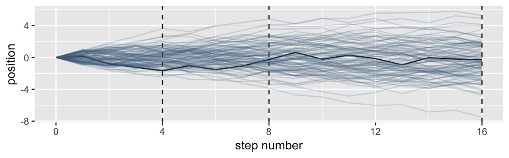
Here’s the code for the bottom three plots of Figure 4.2.
# Figure 4.2.a.
pos %>%
filter(step == 4) %>%
ggplot(aes(x = position)) +
geom_line(stat = "density", color = "dodgerblue1") +
coord_cartesian(xlim = -6:6) +
labs(title = "4 steps")
# Figure 4.2.b.
pos %>%
filter(step == 8) %>%
ggplot(aes(x = position)) +
geom_density(color = "dodgerblue2") +
coord_cartesian(xlim = -6:6) +
labs(title = "8 steps")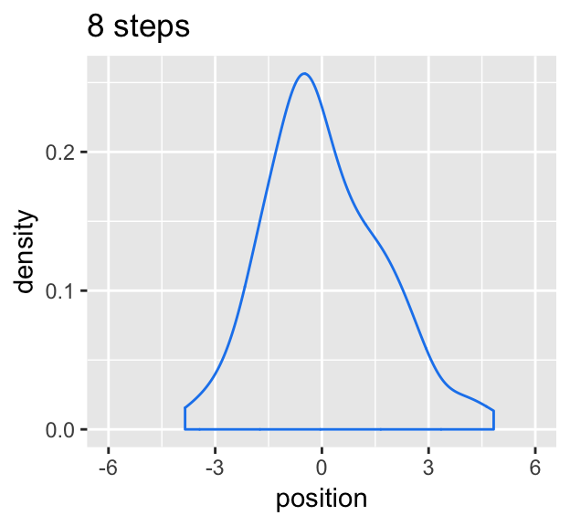
# this is an intermediary step to get an SD value
pos %>%
filter(step == 16) %>%
summarise(sd = sd(position))## # A tibble: 1 x 1
## sd
## <dbl>
## 1 2.18# Figure 4.2.c.
pos %>%
filter(step == 16) %>%
ggplot(aes(x = position)) +
stat_function(fun = dnorm,
args = list(mean = 0, sd = 2.180408),
linetype = 2) + # 2.180408 came from the previous code block
geom_density(color = "transparent", fill = "dodgerblue3", alpha = 1/2) +
coord_cartesian(xlim = -6:6) +
labs(title = "16 steps",
y = "density")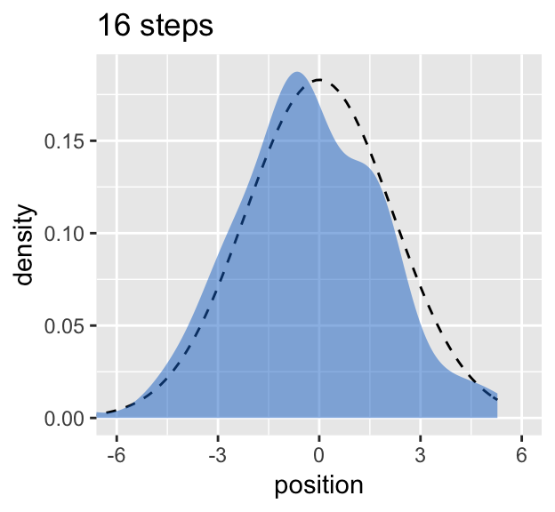
While we were at it, we explored a few ways to express densities. The main action was with the geom_line(), geom_density(), and stat_function() functions.
4.1.2 Normal by multiplication.
Here’s McElreath’s simple random growth rate.
set.seed(4)
prod(1 + runif(12, 0, 0.1))## [1] 1.774719In the runif() part of that code, we generated 12 random draws from the uniform distribution with bounds \([0, 0.1]\). Within the prod() function, we first added 1 to each of those values and then computed their product. Consider a more explicit variant of the code.
set.seed(4)
tibble(a = 1,
b = runif(12, 0, 0.1)) %>%
mutate(c = a + b) %>%
summarise(p = prod(c))## # A tibble: 1 x 1
## p
## <dbl>
## 1 1.77Same result. Rather than using base R replicate() to do this many times, let’s practice with purrr::map_dbl() instead (see here for details).
set.seed(4)
growth <-
tibble(growth = map_dbl(1:10000, ~ prod(1 + runif(12, 0, 0.1))))
ggplot(data = growth, aes(x = growth)) +
geom_density()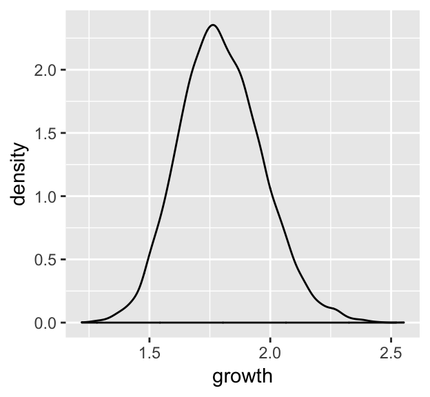
“The smaller the effect of each locus, the better this additive approximation will be” (p. 74). Let’s compare big and small.
# simulate
set.seed(4)
samples <-
tibble(big = map_dbl(1:10000, ~ prod(1 + runif(12, 0, 0.5))),
small = map_dbl(1:10000, ~ prod(1 + runif(12, 0, 0.01)))) %>%
# wrangle
gather(distribution, samples)
# plot
samples %>%
ggplot(aes(x = samples)) +
geom_density(fill = "black", color = "transparent") +
facet_wrap(~distribution, scales = "free") 
Yep, the small samples were more Gaussian.
4.1.3 Normal by log-multiplication.
Instead of saving our tibble, we’ll just feed it directly into our plot.
set.seed(4)
tibble(samples = map_dbl(1:1e4, ~ log(prod(1 + runif(12, 0, 0.5))))) %>%
ggplot(aes(x = samples)) +
geom_density(color = "transparent",
fill = "gray33")
What we did was really compact. Walking it out a bit, here’s what we all did within the second argument within map_dbl() (i.e., everything within log()).
tibble(a = runif(12, 0, 0.5),
b = 1) %>%
mutate(c = a + b) %>%
summarise(p = prod(c) %>% log())## # A tibble: 1 x 1
## p
## <dbl>
## 1 2.82And based on the first argument within map_dbl(), we did that 10,000 times, after which we converted the results to a tibble and then fed those data into ggplot2.
4.1.4 Using Gaussian distributions.
I really like the justifications in the following subsections.
4.1.4.1 Ontological justification.
The Gaussian is
a widespread pattern, appearing again and again at different scales and in different domains. Measurement errors, variations in growth, and the velocities of molecules all tend towards Gaussian distributions. These processes do this because at their heart, these processes add together fluctuations. And repeatedly adding finite fluctuations results in a distribution of sums that have shed all information about the underlying process, aside from mean and spread.
One consequence of this is that statistical models based on Gaussian distributions cannot reliably identify micro-process… (p. 75)
But they can still be useful.
4.1.4.2 Epistemological justification.
Another route to justifying the Gaussian as our choice of skeleton, and a route that will help us appreciate later why it is often a poor choice, is that it represents a particular state of ignorance. When all we know or are willing to say about a distribution of measures (measures are continuous values on the real number line) is their mean and variance, then the Gaussian distribution arises as the most consistent with our assumptions.
That is to say that the Gaussian distribution is the most natural expression of our state of ignorance, because if all we are willing to assume is that a measure has finite variance, the Gaussian distribution is the shape that can be realized in the largest number of ways and does not introduce any new assumptions. It is the least surprising and least informative assumption to make. In this way, the Gaussian is the distribution most consistent with our assumptions… If you don’t think the distribution should be Gaussian, then that implies that you know something else that you should tell your golem about, something that would improve inference. (pp. 75–76)
In the Overthinking: Gaussian distribution box that follows, McElreath gave the formula. Let \(y\) be the criterion, \(\mu\) be the mean, and \(\sigma\) be the standard deviation. Then the probability density of some Gaussian value \(y\) is
\[p(y|\mu, \sigma) = \frac{1}{\sqrt{2 \pi \sigma^2}} \text{exp} \Bigg (- \frac{(y - \mu)^2}{2 \sigma^2} \Bigg)\]
4.2 A language for describing models
Our mathy ways of summarizing models will be something like
\[\begin{align*} \text{criterion}_i & \sim \text{Normal}(\mu_i, \sigma) \\ \mu_i & = \beta \times \text{predictor}_i \\ \beta & \sim \text{Normal}(0, 10) \\ \sigma & \sim \text{HalfCauchy}(0, 1) \end{align*}\]And as McElreath then followed up with, “If that doesn’t make much sense, good. That indicates that you are holding the right textbook” (p. 77). Welcome applied statistics!
4.2.1 Re-describing the globe tossing model.
For the globe tossing model, the probability \(p\) of a count of water \(w\) based on \(n\) trials was
\[\begin{align*} w & \sim \text{Binomial}(n, p) \\ p & \sim \text{Uniform}(0, 1) \end{align*}\]We can break McElreath’s R code 4.6 down a little bit with a tibble like so.
# how many `p_grid` points would you like?
n_points <- 100
d <-
tibble(w = 6,
n = 9,
p_grid = seq(from = 0, to = 1, length.out = n_points)) %>%
mutate(prior = dunif(p_grid, 0, 1),
likelihood = dbinom(w, n, p_grid)) %>%
mutate(posterior = likelihood * prior / sum(likelihood * prior))
head(d)## # A tibble: 6 x 6
## w n p_grid prior likelihood posterior
## <dbl> <dbl> <dbl> <dbl> <dbl> <dbl>
## 1 6 9 0 1 0. 0.
## 2 6 9 0.0101 1 8.65e-11 8.74e-12
## 3 6 9 0.0202 1 5.37e- 9 5.43e-10
## 4 6 9 0.0303 1 5.93e- 8 5.99e- 9
## 5 6 9 0.0404 1 3.23e- 7 3.26e- 8
## 6 6 9 0.0505 1 1.19e- 6 1.21e- 7In case you were curious, here’s what they look like:
d %>%
select(-w, -n) %>%
gather(key, value, -p_grid) %>%
# this line allows us to dictate the order the panels will appear in
mutate(key = factor(key, levels = c("prior", "likelihood", "posterior"))) %>%
ggplot(aes(x = p_grid, ymin = 0, ymax = value, fill = key)) +
geom_ribbon() +
scale_fill_manual(values = c("blue", "red", "purple")) +
scale_y_continuous(NULL, breaks = NULL) +
theme(legend.position = "none") +
facet_wrap(~key, scales = "free")
The posterior is a combination of the prior and the likelihood. And when the prior is flat across the parameter space, the posterior is just the likelihood re-expressed as a probability. As we go along, you’ll see that we almost never use flat priors.
4.3 A Gaussian model of height
There are an infinite number of possible Gaussian distributions. Some have small means. Others have large means. Some are wide, with a large \(\sigma\). Others are narrow. We want our Bayesian machine to consider every possible distribution, each defined by a combination of \(\mu\) and \(\sigma\), and rank them by posterior plausibility. (p. 79)
4.3.1 The data.
Let’s get the data from McElreath’s rethinking package.
library(rethinking)
data(Howell1)
d <- Howell1Here we open our main statistical package, Bürkner’s brms. But before we do, we’ll need to detach the rethinking package. R will not allow users to use a function from one package that shares the same name as a different function from another package if both packages are open at the same time. The rethinking and brms packages are designed for similar purposes and, unsurprisingly, overlap in the names of their functions. To prevent problems, we will always make sure rethinking is detached before using brms. To learn more on the topic, see this R-bloggers post.
rm(Howell1)
detach(package:rethinking, unload = T)
library(brms)## Warning: package 'Rcpp' was built under R version 3.5.2Go ahead and investigate the data with str(), the tidyverse analogue for which is glimpse().
d %>%
str()## 'data.frame': 544 obs. of 4 variables:
## $ height: num 152 140 137 157 145 ...
## $ weight: num 47.8 36.5 31.9 53 41.3 ...
## $ age : num 63 63 65 41 51 35 32 27 19 54 ...
## $ male : int 1 0 0 1 0 1 0 1 0 1 ...Here are the height values.
d %>%
select(height) %>%
head()## height
## 1 151.765
## 2 139.700
## 3 136.525
## 4 156.845
## 5 145.415
## 6 163.830We can use filter() to make an adults-only data frame.
d2 <-
d %>%
filter(age >= 18)4.3.1.1 Overthinking: Data frames.
This probably reflects my training history, but the structure of a data frame seems natural and inherently appealing, to me. So I can’t relate to the “annoying” comment. But if you’re in the other camp, do check out either of these two data wrangling talks (here and here) by the ineffable Jenny Bryan.
4.3.1.2 Overthinking: Index magic.
For more on indexing, check out chapter 9 of Roger Peng’s R Programming for Data Science or even the Subsetting subsection from R4DS.
4.3.2 The model.
The likelihood for our model is
\[h_i \sim \text{Normal}(\mu, \sigma)\]
Our \(\mu\) prior will be
\[\mu \sim \text{Normal}(178, 20)\]
And our prior for \(\sigma\) will be
\[\sigma \sim \text{Uniform}(0, 50)\]
Here’s the shape of the prior for \(\mu\) in \(N(178, 20)\).
ggplot(data = tibble(x = seq(from = 100, to = 250, by = .1)),
aes(x = x, y = dnorm(x, mean = 178, sd = 20))) +
geom_line() +
ylab("density")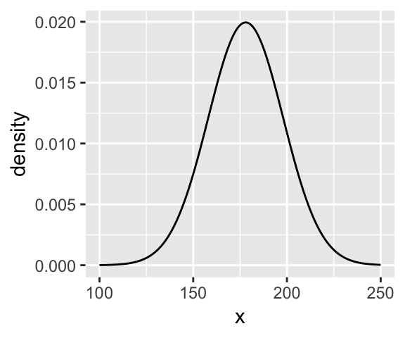
And here’s the ggplot2 code for our prior for \(\sigma\), a uniform distribution with a minimum value of 0 and a maximum value of 50. We don’t really need the y axis when looking at the shapes of a density, so we’ll just remove it with scale_y_continuous().
tibble(x = seq(from = -10, to = 60, by = .1)) %>%
ggplot(aes(x = x, y = dunif(x, min = 0, max = 50))) +
geom_line() +
scale_y_continuous(NULL, breaks = NULL) +
theme(panel.grid = element_blank())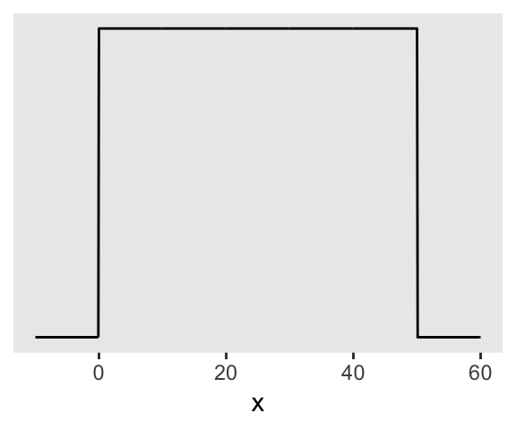
We can simulate from both priors at once to get a prior probability distribution of heights.
n <- 1e4
set.seed(4)
tibble(sample_mu = rnorm(n, mean = 178, sd = 20),
sample_sigma = runif(n, min = 0, max = 50)) %>%
mutate(x = rnorm(n, mean = sample_mu, sd = sample_sigma)) %>%
ggplot(aes(x = x)) +
geom_density(fill = "black", size = 0) +
scale_y_continuous(NULL, breaks = NULL) +
labs(subtitle = expression(paste("Prior predictive distribution for ", italic(h[i]))),
x = NULL) +
theme(panel.grid = element_blank())As McElreath wrote, we’ve made a “vaguely bell-shaped density with thick tails. It is the expected distribution of heights, averaged over the prior” (p. 83).
4.3.3 Grid approximation of the posterior distribution.
As McElreath explained, you’ll never use this for practical data analysis. But I found this helped me better understanding what exactly we’re doing with Bayesian estimation. So let’s play along.
n <- 200
d_grid <-
tibble(mu = seq(from = 140, to = 160, length.out = n),
sigma = seq(from = 4, to = 9, length.out = n)) %>%
# we'll accomplish with `tidyr::expand()` what McElreath did with base R `expand.grid()`
expand(mu, sigma)
head(d_grid)## # A tibble: 6 x 2
## mu sigma
## <dbl> <dbl>
## 1 140 4
## 2 140 4.03
## 3 140 4.05
## 4 140 4.08
## 5 140 4.10
## 6 140 4.13d_grid contains every combination of mu and sigma across their specified values. Instead of base R sapply(), we’ll do the computations by making a custom function which we’ll plug into purrr::map2().
grid_function <- function(mu, sigma){
dnorm(d2$height, mean = mu, sd = sigma, log = T) %>%
sum()
}Now we’re ready to complete the tibble.
d_grid <-
d_grid %>%
mutate(log_likelihood = map2(mu, sigma, grid_function)) %>%
unnest() %>%
mutate(prior_mu = dnorm(mu, mean = 178, sd = 20, log = T),
prior_sigma = dunif(sigma, min = 0, max = 50, log = T)) %>%
mutate(product = log_likelihood + prior_mu + prior_sigma) %>%
mutate(probability = exp(product - max(product)))
head(d_grid)## # A tibble: 6 x 7
## mu sigma log_likelihood prior_mu prior_sigma product probability
## <dbl> <dbl> <dbl> <dbl> <dbl> <dbl> <dbl>
## 1 140 4 -3813. -5.72 -3.91 -3822. 0
## 2 140 4.03 -3778. -5.72 -3.91 -3787. 0
## 3 140 4.05 -3743. -5.72 -3.91 -3753. 0
## 4 140 4.08 -3709. -5.72 -3.91 -3719. 0
## 5 140 4.10 -3676. -5.72 -3.91 -3686. 0
## 6 140 4.13 -3644. -5.72 -3.91 -3653. 0In the final d_grid, the probability vector contains the posterior probabilities across values of mu and sigma. We can make a contour plot with geom_contour().
d_grid %>%
ggplot(aes(x = mu, y = sigma, z = probability)) +
geom_contour() +
labs(x = expression(mu),
y = expression(sigma)) +
coord_cartesian(xlim = range(d_grid$mu),
ylim = range(d_grid$sigma)) +
theme(panel.grid = element_blank())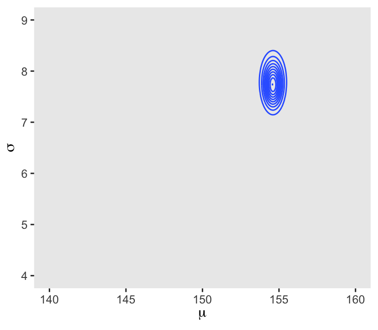
We’ll make our heat map with geom_raster(aes(fill = probability)).
d_grid %>%
ggplot(aes(x = mu, y = sigma)) +
geom_raster(aes(fill = probability),
interpolate = T) +
scale_fill_viridis_c(option = "A") +
labs(x = expression(mu),
y = expression(sigma)) +
theme(panel.grid = element_blank())4.3.4 Sampling from the posterior.
We can use dplyr::sample_n() to sample rows, with replacement, from d_grid.
set.seed(4)
d_grid_samples <-
d_grid %>%
sample_n(size = 1e4, replace = T, weight = probability)
d_grid_samples %>%
ggplot(aes(x = mu, y = sigma)) +
geom_point(size = .9, alpha = 1/15) +
scale_fill_viridis_c() +
labs(x = expression(mu[samples]),
y = expression(sigma[samples])) +
theme(panel.grid = element_blank())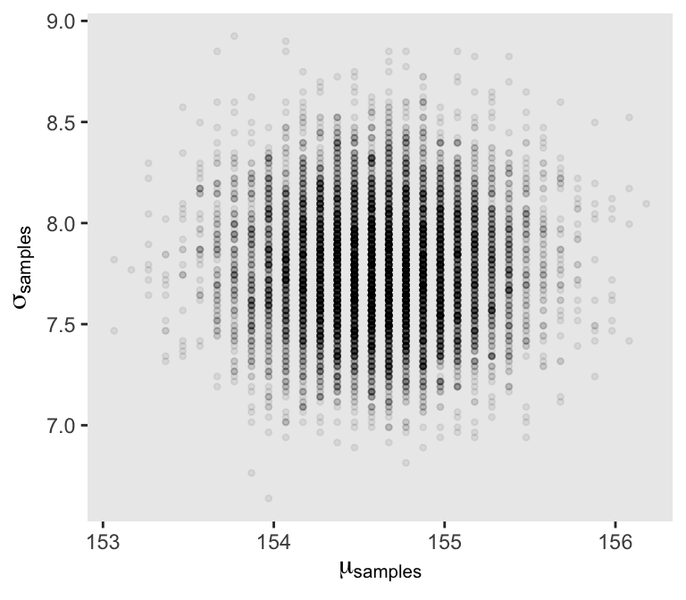
We can use gather() and then facet_warp() to plot the densities for both mu and sigma at once.
d_grid_samples %>%
select(mu, sigma) %>%
gather() %>%
ggplot(aes(x = value)) +
geom_density(fill = "grey33", size = 0) +
scale_y_continuous(NULL, breaks = NULL) +
xlab(NULL) +
theme(panel.grid = element_blank()) +
facet_wrap(~key, scales = "free")
We’ll use the tidybayes package to compute their posterior modes and 95% HDIs.
library(tidybayes)
d_grid_samples %>%
select(mu, sigma) %>%
gather() %>%
group_by(key) %>%
mode_hdi(value)## # A tibble: 2 x 7
## key value .lower .upper .width .point .interval
## <chr> <dbl> <dbl> <dbl> <dbl> <chr> <chr>
## 1 mu 155. 154. 155. 0.95 mode hdi
## 2 sigma 7.71 7.19 8.32 0.95 mode hdiLet’s say you wanted their posterior medians and 50% quantile-based intervals, instead. Just switch out the last line for median_qi(value, .width = .5).
4.3.4.1 Overthinking: Sample size and the normality of \(\sigma\)’s posterior.
Since we’ll be fitting models with brms almost exclusively from here on out, this section is largely moot. But we’ll do it anyway for the sake of practice. I’m going to break the steps up like before rather than compress the code together. Here’s d3.
set.seed(4)
(d3 <- sample(d2$height, size = 20))## [1] 149.225 156.845 150.495 149.225 158.750 169.545 167.005 160.655 141.605 146.050 168.910 163.195
## [13] 171.450 165.100 148.590 156.210 160.655 149.225 147.320 152.400For our first step using d3, we’ll redefine d_grid.
n <- 200
# note we've redefined the ranges of `mu` and `sigma`
d_grid <-
tibble(mu = seq(from = 150, to = 170, length.out = n),
sigma = seq(from = 4, to = 20, length.out = n)) %>%
expand(mu, sigma)Second, we’ll redefine our custom grid_function() function to operate over the height values of d3.
grid_function <- function(mu, sigma){
dnorm(d3, mean = mu, sd = sigma, log = T) %>%
sum()
}Now we’ll use the amended grid_function() to make the posterior.
d_grid <-
d_grid %>%
mutate(log_likelihood = map2_dbl(mu, sigma, grid_function)) %>%
mutate(prior_mu = dnorm(mu, mean = 178, sd = 20, log = T),
prior_sigma = dunif(sigma, min = 0, max = 50, log = T)) %>%
mutate(product = log_likelihood + prior_mu + prior_sigma) %>%
mutate(probability = exp(product - max(product)))Did you catch our use of purrr::map2_dbl(), there, in place of purrr::map2()? It turns out that purrr::map() and purrr::map2() always return a list (see here and here). But as Phil Straforelli kindly pointed out, we can add the _dbl suffix to those functions, which will instruct the purrr package to return a double vector (i.e., a common kind of numeric vector). The advantage of that approach is we no longer need to follow our map() or map2() lines with unnest(). To learn more about the ins and outs of the map() family, check out this section from R4DS or Jenny Bryan’s purrr tutorial.
Next we’ll sample_n() and plot.
set.seed(4)
d_grid_samples <-
d_grid %>%
sample_n(size = 1e4, replace = T, weight = probability)
d_grid_samples %>%
ggplot(aes(x = mu, y = sigma)) +
geom_point(size = .9, alpha = 1/15) +
scale_fill_viridis_c() +
labs(x = expression(mu[samples]),
y = expression(sigma[samples])) +
theme(panel.grid = element_blank())
Behold the updated densities.
d_grid_samples %>%
select(mu, sigma) %>%
gather() %>%
ggplot(aes(x = value)) +
geom_density(fill = "grey33", size = 0) +
scale_y_continuous(NULL, breaks = NULL) +
xlab(NULL) +
theme(panel.grid = element_blank()) +
facet_wrap(~key, scales= "free")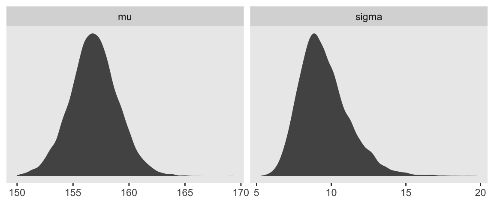
Sigma’s not so Gaussian with that small \(n\).
4.3.5 Fitting the model with map()brm().
map()We won’t actually use rethinking::map()–which you should not conflate with purrr::map()–, but will jumpt straight to the primary brms modeling function, brm(). In the text, McElreath indexed his models with names like m4.1. I will largely follow that convention, but will replace the m with a b to stand for the brms package. Here’s the first model.
b4.1 <-
brm(data = d2, family = gaussian,
height ~ 1,
prior = c(prior(normal(178, 20), class = Intercept),
prior(uniform(0, 50), class = sigma)),
iter = 31000, warmup = 30000, chains = 4, cores = 4,
seed = 4)McElreath’s uniform prior for \(\sigma\) was rough on brms. It took an unusually-large number of warmup iterations before the chains sampled properly. As McElreath covered in Chapter 8, HMC tends to work better when you default to a half Cauchy for \(\sigma\). Here’s how to do so.
b4.1_half_cauchy <-
brm(data = d2, family = gaussian,
height ~ 1,
prior = c(prior(normal(178, 20), class = Intercept),
prior(cauchy(0, 1), class = sigma)),
iter = 2000, warmup = 1000, chains = 4, cores = 4,
seed = 4)This leads to an important point. After running model with Hamiltonian Monte Carlo (HMC), it’s a good idea to inspect the chains. As we’ll see, McElreath coverd this in Chapter 8. Here’s a typical way to do so in brms.
plot(b4.1_half_cauchy)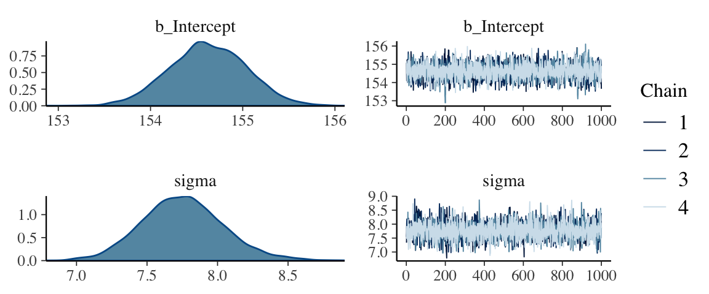
If you want detailed diagnostics for the HMC chains, call launch_shinystan(b4.1). That’ll keep you busy for a while. But anyway, the chains look good. We can reasonably trust the results.
Here’s how to get the model summary of our brm() object.
print(b4.1_half_cauchy)## Family: gaussian
## Links: mu = identity; sigma = identity
## Formula: height ~ 1
## Data: d2 (Number of observations: 352)
## Samples: 4 chains, each with iter = 2000; warmup = 1000; thin = 1;
## total post-warmup samples = 4000
##
## Population-Level Effects:
## Estimate Est.Error l-95% CI u-95% CI Eff.Sample Rhat
## Intercept 154.62 0.42 153.81 155.43 2725 1.00
##
## Family Specific Parameters:
## Estimate Est.Error l-95% CI u-95% CI Eff.Sample Rhat
## sigma 7.75 0.29 7.21 8.36 3317 1.00
##
## Samples were drawn using sampling(NUTS). For each parameter, Eff.Sample
## is a crude measure of effective sample size, and Rhat is the potential
## scale reduction factor on split chains (at convergence, Rhat = 1).The summary() function works in a similar way.
You can also get a Stan-like summary with this:
b4.1_half_cauchy$fit## Inference for Stan model: 252a73b897ed8b29d2decfe77302d732.
## 4 chains, each with iter=2000; warmup=1000; thin=1;
## post-warmup draws per chain=1000, total post-warmup draws=4000.
##
## mean se_mean sd 2.5% 25% 50% 75% 97.5% n_eff Rhat
## b_Intercept 154.62 0.01 0.42 153.81 154.34 154.62 154.91 155.43 2725 1
## sigma 7.75 0.01 0.29 7.21 7.56 7.75 7.94 8.36 3317 1
## lp__ -1227.52 0.03 1.01 -1230.29 -1227.90 -1227.21 -1226.80 -1226.54 1317 1
##
## Samples were drawn using NUTS(diag_e) at Sat May 4 10:45:09 2019.
## For each parameter, n_eff is a crude measure of effective sample size,
## and Rhat is the potential scale reduction factor on split chains (at
## convergence, Rhat=1).Whereas rethinking defaults to 89% intervals, using print() or summary() with brms models defaults to 95% intervals. Unless otherwise specified, I will stick with 95% intervals throughout. However, if you really want those 89% intervals, an easy way is with the prob argument within brms::summary() or brms::print().
summary(b4.1_half_cauchy, prob = .89)## Family: gaussian
## Links: mu = identity; sigma = identity
## Formula: height ~ 1
## Data: d2 (Number of observations: 352)
## Samples: 4 chains, each with iter = 2000; warmup = 1000; thin = 1;
## total post-warmup samples = 4000
##
## Population-Level Effects:
## Estimate Est.Error l-89% CI u-89% CI Eff.Sample Rhat
## Intercept 154.62 0.42 153.96 155.28 2725 1.00
##
## Family Specific Parameters:
## Estimate Est.Error l-89% CI u-89% CI Eff.Sample Rhat
## sigma 7.75 0.29 7.30 8.24 3317 1.00
##
## Samples were drawn using sampling(NUTS). For each parameter, Eff.Sample
## is a crude measure of effective sample size, and Rhat is the potential
## scale reduction factor on split chains (at convergence, Rhat = 1).Anyways, here’s the shockingly-narrow-\(\mu\)-prior model.
b4.2 <-
brm(data = d2, family = gaussian,
height ~ 1,
prior = c(prior(normal(178, .1), class = Intercept),
prior(uniform(0, 50), class = sigma)),
iter = 3000, warmup = 2000, chains = 4, cores = 4,
seed = 4)Check the chains.
plot(b4.2)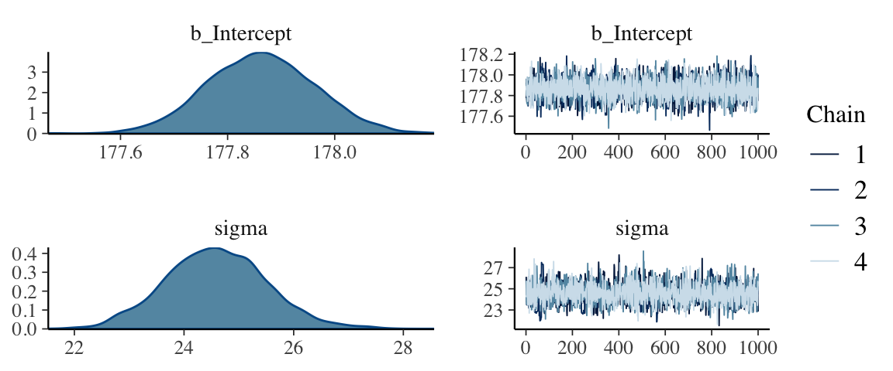
I had to increase the warmup due to convergence issues. After doing so, everything looks to be on the up and up. The chains look great. And again, to learn more about these technical details, check out Chapter 8.
Here’s the model summary().
summary(b4.2)## Family: gaussian
## Links: mu = identity; sigma = identity
## Formula: height ~ 1
## Data: d2 (Number of observations: 352)
## Samples: 4 chains, each with iter = 3000; warmup = 2000; thin = 1;
## total post-warmup samples = 4000
##
## Population-Level Effects:
## Estimate Est.Error l-95% CI u-95% CI Eff.Sample Rhat
## Intercept 177.86 0.10 177.67 178.06 3434 1.00
##
## Family Specific Parameters:
## Estimate Est.Error l-95% CI u-95% CI Eff.Sample Rhat
## sigma 24.59 0.92 22.82 26.47 1735 1.00
##
## Samples were drawn using sampling(NUTS). For each parameter, Eff.Sample
## is a crude measure of effective sample size, and Rhat is the potential
## scale reduction factor on split chains (at convergence, Rhat = 1).4.3.6 Sampling from a map()brm() fit.
map()brms doesn’t seem to have a convenience function that works the way vcov() does for rethinking. For example:
vcov(b4.1_half_cauchy)## Intercept
## Intercept 0.1733533This only returns the first element in the matrix it did for rethinking. That is, it appears brms::vcov() only returns the variance/covariance matrix for the single-level \(\beta\) parameters (i.e., those used to model \(\mu\)).
However, if you really wanted this information, you could get it after putting the HMC chains in a data frame.
post <- posterior_samples(b4.1_half_cauchy)
head(post)## b_Intercept sigma lp__
## 1 155.0785 7.335334 -1228.205
## 2 154.0975 7.652924 -1227.324
## 3 154.8050 7.499036 -1226.946
## 4 155.2052 7.574270 -1227.748
## 5 155.2581 7.565656 -1227.970
## 6 154.0118 7.612666 -1227.663Now select() the columns containing the draws from the desired parameters and feed them into cof().
select(post, b_Intercept:sigma) %>%
cov()## b_Intercept sigma
## b_Intercept 0.173353306 -0.003242316
## sigma -0.003242316 0.084394323That was “(1) a vector of variances for the parameters and (2) a correlation matrix” for them (p. 90). Here are just the variances (i.e., the diagonal elements) and the correlation matrix.
# variances
select(post, b_Intercept:sigma) %>%
cov() %>%
diag()## b_Intercept sigma
## 0.17335331 0.08439432# correlation
post %>%
select(b_Intercept, sigma) %>%
cor()## b_Intercept sigma
## b_Intercept 1.00000000 -0.02680604
## sigma -0.02680604 1.00000000With our post <- posterior_samples(b4.1_half_cauchy) code from a few lines above, we’ve already done the brms version of what McElreath did with extract.samples() on page 90. However, what happened under the hood was different. Whereas rethinking used the mvnorm() function from the MASS package, in brms we just extracted the iterations of the HMC chains and put them in a data frame.
str(post)## 'data.frame': 4000 obs. of 3 variables:
## $ b_Intercept: num 155 154 155 155 155 ...
## $ sigma : num 7.34 7.65 7.5 7.57 7.57 ...
## $ lp__ : num -1228 -1227 -1227 -1228 -1228 ...Notice how our data frame, post, includes a third vector, lp__. That’s the log posterior. See the brms reference manual or the “The Log-Posterior (function and gradient)” section of the Stan Development Team’s RStan: the R interface to Stan for details. The log posterior will largely be outside of our focus in this project.
The summary() function doesn’t work for brms posterior data frames quite the way precis() does for posterior data frames from the rethinking package. E.g.,
summary(post[, 1:2])## b_Intercept sigma
## Min. :152.9 Min. :6.785
## 1st Qu.:154.3 1st Qu.:7.561
## Median :154.6 Median :7.748
## Mean :154.6 Mean :7.754
## 3rd Qu.:154.9 3rd Qu.:7.938
## Max. :156.1 Max. :8.902Here’s one option using the transpose of a quantile() call nested within apply(), which is a very general function you can learn more about here or here.
t(apply(post[, 1:2], 2, quantile, probs = c(.5, .025, .75)))## 50% 2.5% 75%
## b_Intercept 154.619016 153.814860 154.909843
## sigma 7.748051 7.210529 7.938047The base R code is compact, but somewhat opaque. Here’s how to do something similar with more explicit tidyverse code.
post %>%
select(-lp__) %>%
gather(parameter) %>%
group_by(parameter) %>%
summarise(mean = mean(value),
SD = sd(value),
`2.5_percentile` = quantile(value, probs = .025),
`97.5_percentile` = quantile(value, probs = .975)) %>%
mutate_if(is.numeric, round, digits = 2)## # A tibble: 2 x 5
## parameter mean SD `2.5_percentile` `97.5_percentile`
## <chr> <dbl> <dbl> <dbl> <dbl>
## 1 b_Intercept 155. 0.42 154. 155.
## 2 sigma 7.75 0.290 7.21 8.36You can always get pretty similar information by just putting the brm() fit object into posterior_summary().
posterior_summary(b4.1_half_cauchy)## Estimate Est.Error Q2.5 Q97.5
## b_Intercept 154.623104 0.4163572 153.814860 155.433461
## sigma 7.754454 0.2905070 7.210529 8.361077
## lp__ -1227.519041 1.0103147 -1230.287040 -1226.540850And if you’re willing to drop the posterior \(SD\)s, you can use tidybayes::mean_qi(), too.
post %>%
select(-lp__) %>%
gather(parameter) %>%
group_by(parameter) %>%
mean_qi(value)## # A tibble: 2 x 7
## parameter value .lower .upper .width .point .interval
## <chr> <dbl> <dbl> <dbl> <dbl> <chr> <chr>
## 1 b_Intercept 155. 154. 155. 0.95 mean qi
## 2 sigma 7.75 7.21 8.36 0.95 mean qi4.3.6.1 Overthinking: Under the hood with multivariate sampling.
Again, brms::posterior_samples() is not the same as rethinking::extract.samples(). Rather than use the MASS::mvnorm(), brms takes the iterations from the HMC chains. McElreath coverd all of this in Chapter 8. You might also look at the brms reference manual or GitHub page for details.
4.3.6.2 Overthinking: Getting \(\sigma\) right.
There’s no need to fret about this in brms. With HMC, we are not constraining the posteriors to the multivariate normal distribution. Here’s our posterior density for \(\sigma\).
ggplot(data = post,
aes(x = sigma)) +
geom_density(size = 1/10, fill = "black") +
scale_y_continuous(NULL, breaks = NULL) +
xlab(expression(sigma)) +
theme(panel.grid = element_blank())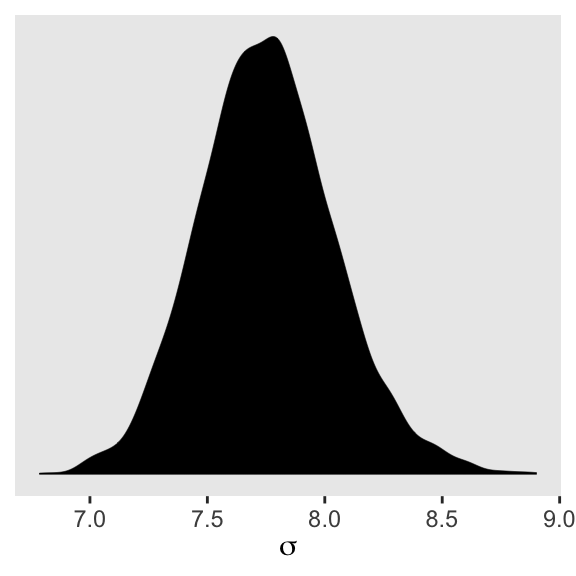
See? HMC handled the mild skew just fine.
But sometimes you want to actually model \(\sigma\), such as in the case where your variances are systematically heterogeneous. Bürkner calls these kinds of models distributional models, which you can learn more about in his vignette Estimating Distributional Models with brms. As he explained in the vignette, you actually model \(\text{log}(\sigma)\) in those instances. If you’re curious, we’ll practice with a model like this in Chapter 9.
4.4 Adding a predictor
Here’s our scatter plot of weight and height.
ggplot(data = d2,
aes(x = weight, y = height)) +
geom_point(shape = 1, size = 2) +
theme_bw() +
theme(panel.grid = element_blank())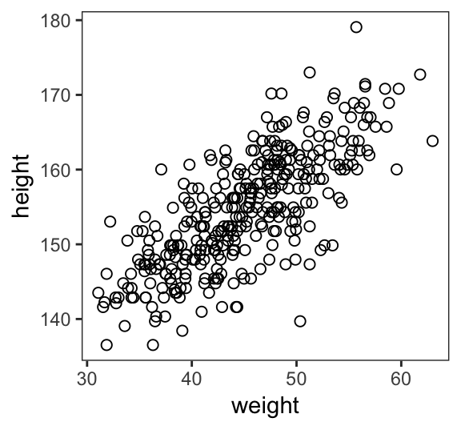
4.4.1 The linear model strategy
In our new univariable model
\[\begin{align*} h_i & \sim \text{Normal}(\mu_i, \sigma) \\ \mu_i & = \alpha + \beta x_i \\ \alpha & \sim \text{Normal}(178, 100) \\ \beta & \sim \text{Normal}(0, 10) \\ \sigma & \sim \text{Uniform}(0, 50) \end{align*}\]4.4.2 Fitting the model.
The brms::brm() syntax doesn’t mirror the statistical notation. But here are the analogues to the exposition at the bottom of page 95.
- \(h_i \sim \text{Normal}(\mu_i, \sigma)\):
family = gaussian - \(\mu_i = \alpha + \beta x_i\):
height ~ 1 + weight - \(\alpha \sim \text{Normal}(156, 100)\):
prior(normal(156, 100), class = Intercept - \(\beta \sim \text{Normal}(0, 10)\):
prior(normal(0, 10), class = b) - \(\sigma \sim \text{Uniform}(0, 50)\):
prior(uniform(0, 50), class = sigma)
Thus, to add a predictor you just the + operator in the model formula.
b4.3 <-
brm(data = d2, family = gaussian,
height ~ 1 + weight,
prior = c(prior(normal(156, 100), class = Intercept),
prior(normal(0, 10), class = b),
prior(uniform(0, 50), class = sigma)),
iter = 41000, warmup = 40000, chains = 4, cores = 4,
seed = 4)This was another example of how using a uniform prior for \(\sigma\) required we use an unusually large number of warmup iterations before the HMC chains converged on the posterior. Change the prior to cauchy(0, 1) and the chains converge with no problem, resulting in much better effective samples, too. Here are the trace plots.
plot(b4.3)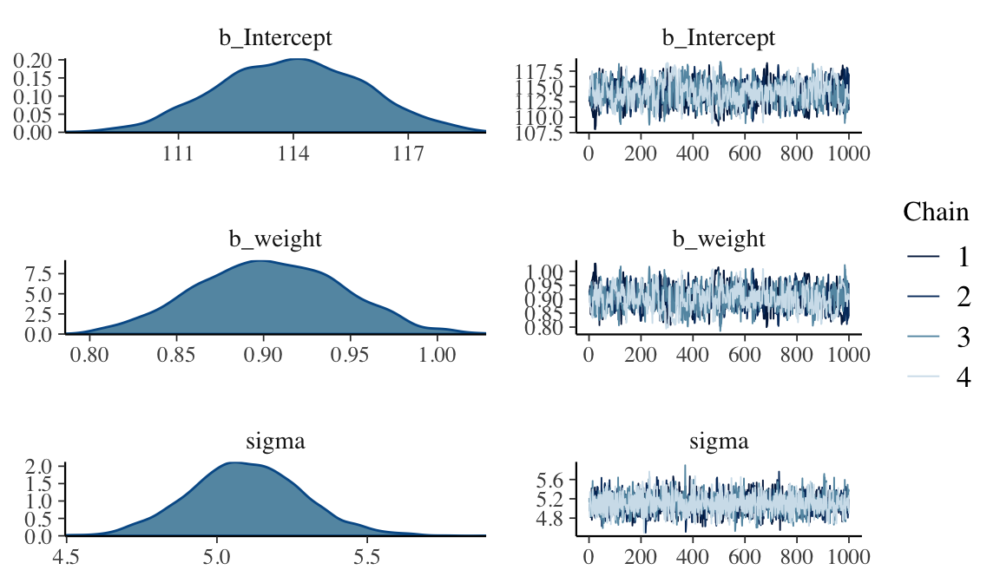
4.4.3 Interpreting the model fit.
“One trouble with statistical models is that they are hard to understand” (p. 97). Welcome to the world of applied statistics.
4.4.3.1 Tables of estimates.
With a little [] subsetting we can exclude the log posterior from the summary.
posterior_summary(b4.3)[1:3, ]## Estimate Est.Error Q2.5 Q97.5
## b_Intercept 113.938784 1.8713415 110.3740463 117.5393583
## b_weight 0.903689 0.0412386 0.8244307 0.9816048
## sigma 5.096834 0.1874516 4.7311309 5.4740004Again, brms doesn’t have a convenient corr = TRUE argument for plot() or summary(). But you can get that information after putting the chains in a data frame.
posterior_samples(b4.3) %>%
select(-lp__) %>%
cor() %>%
round(digits = 2)## b_Intercept b_weight sigma
## b_Intercept 1.00 -0.99 -0.01
## b_weight -0.99 1.00 0.01
## sigma -0.01 0.01 1.00With centering, we can reduce the correlations among the parameters.
d2 <-
d2 %>%
mutate(weight_c = weight - mean(weight))Fit the weight_c model, b4.4.
b4.4 <-
brm(data = d2, family = gaussian,
height ~ 1 + weight_c,
prior = c(prior(normal(178, 100), class = Intercept),
prior(normal(0, 10), class = b),
prior(uniform(0, 50), class = sigma)),
iter = 46000, warmup = 45000, chains = 4, cores = 4,
seed = 4)plot(b4.4)
posterior_summary(b4.4)[1:3, ]## Estimate Est.Error Q2.5 Q97.5
## b_Intercept 154.5972099 0.27167270 154.0732619 155.1449945
## b_weight_c 0.9056644 0.04074593 0.8271512 0.9841592
## sigma 5.1015725 0.19645580 4.7371764 5.5066741Like before, the uniform prior required extensive warmup iterations to produce a good posterior. This is easily fixed using a half Cauchy prior, instead. Anyways, the effective samples improved. Here’s the parameter correlation info.
posterior_samples(b4.4) %>%
select(-lp__) %>%
cor() %>%
round(digits = 2)## b_Intercept b_weight_c sigma
## b_Intercept 1.00 0.02 -0.01
## b_weight_c 0.02 1.00 0.04
## sigma -0.01 0.04 1.00See? Now all the correlations are quite low. Also, if you prefer a visual approach, you might do pairs(b4.4).
4.4.3.2 Plotting posterior inference against the data.
Here is the code for Figure 4.4. Note our use of the fixef() function.
d2 %>%
ggplot(aes(x = weight, y = height)) +
geom_abline(intercept = fixef(b4.3)[1],
slope = fixef(b4.3)[2]) +
geom_point(shape = 1, size = 2, color = "royalblue") +
theme_bw() +
theme(panel.grid = element_blank())
In the brms reference manual, Bürkner described the job of thefixef() function as “extract[ing] the population-level (’fixed’) effects from a brmsfit object”. If you’re new to multilevel models, it might not be clear what he meant by “population-level” or “fixed” effects. Don’t worry. That’ll all become clear starting around Chapter 12. In the meantime, just think of them as the typical regression parameters, minus \(\sigma\).
4.4.3.3 Adding uncertainty around the mean.
Be default, we extract all the posterior iterations with posterior_samples().
post <- posterior_samples(b4.3)
post %>%
slice(1:5) # this serves a similar function as `head()`## b_Intercept b_weight sigma lp__
## 1 113.1684 0.9199020 5.151709 -1082.192
## 2 113.0394 0.9195661 5.181224 -1082.471
## 3 113.5766 0.9200660 5.196852 -1083.202
## 4 112.3897 0.9475964 5.101521 -1083.790
## 5 111.8950 0.9400941 5.096093 -1083.521Here are the four models leading up to McElreath’s Figure 4.5. To reduce my computation time, I used a half Cauchy(0, 1) prior on \(\sigma\). If you are willing to wait for the warmups, switching that out for McElreath’s uniform prior should work fine as well.
n <- 10
b.10 <-
brm(data = d2 %>%
slice(1:n), # note our tricky use of `n` and `slice()`
family = gaussian,
height ~ 1 + weight,
prior = c(prior(normal(178, 100), class = Intercept),
prior(normal(0, 10), class = b),
prior(cauchy(0, 1), class = sigma)),
iter = 2000, warmup = 1000, chains = 4, cores = 4,
seed = 4)
n <- 50
b.50 <-
brm(data = d2 %>%
slice(1:n),
family = gaussian,
height ~ 1 + weight,
prior = c(prior(normal(178, 100), class = Intercept),
prior(normal(0, 10), class = b),
prior(cauchy(0, 1), class = sigma)),
iter = 2000, warmup = 1000, chains = 4, cores = 4,
seed = 4)
n <- 150
b.150 <-
brm(data = d2 %>%
slice(1:n),
family = gaussian,
height ~ 1 + weight,
prior = c(prior(normal(178, 100), class = Intercept),
prior(normal(0, 10), class = b),
prior(cauchy(0, 1), class = sigma)),
iter = 2000, warmup = 1000, chains = 4, cores = 4,
seed = 4)
n <- 352
b.352 <-
brm(data = d2 %>%
slice(1:n),
family = gaussian,
height ~ 1 + weight,
prior = c(prior(normal(178, 100), class = Intercept),
prior(normal(0, 10), class = b),
prior(cauchy(0, 1), class = sigma)),
iter = 2000, warmup = 1000, chains = 4, cores = 4,
seed = 4)I’m not going to clutter up the document with all the trace plots and coefficient summaries from these four models. But here’s how to get that information.
plot(b.10)
print(b.10)
plot(b.50)
print(b.50)
plot(b.150)
print(b.150)
plot(b.352)
print(b.352)We’ll need to put the chains of each model into data frames.
post10 <- posterior_samples(b.10)
post50 <- posterior_samples(b.50)
post150 <- posterior_samples(b.150)
post352 <- posterior_samples(b.352)Here is the code for the four individual plots.
p10 <-
ggplot(data = d2[1:10 , ],
aes(x = weight, y = height)) +
geom_abline(intercept = post10[1:20, 1],
slope = post10[1:20, 2],
size = 1/3, alpha = .3) +
geom_point(shape = 1, size = 2, color = "royalblue") +
coord_cartesian(xlim = range(d2$weight),
ylim = range(d2$height)) +
labs(subtitle = "N = 10") +
theme_bw() +
theme(panel.grid = element_blank())
p50 <-
ggplot(data = d2[1:50 , ],
aes(x = weight, y = height)) +
geom_abline(intercept = post50[1:20, 1],
slope = post50[1:20, 2],
size = 1/3, alpha = .3) +
geom_point(shape = 1, size = 2, color = "royalblue") +
coord_cartesian(xlim = range(d2$weight),
ylim = range(d2$height)) +
labs(subtitle = "N = 50") +
theme_bw() +
theme(panel.grid = element_blank())
p150 <-
ggplot(data = d2[1:150 , ],
aes(x = weight, y = height)) +
geom_abline(intercept = post150[1:20, 1],
slope = post150[1:20, 2],
size = 1/3, alpha = .3) +
geom_point(shape = 1, size = 2, color = "royalblue") +
coord_cartesian(xlim = range(d2$weight),
ylim = range(d2$height)) +
labs(subtitle = "N = 150") +
theme_bw() +
theme(panel.grid = element_blank())
p352 <-
ggplot(data = d2[1:352 , ],
aes(x = weight, y = height)) +
geom_abline(intercept = post352[1:20, 1],
slope = post352[1:20, 2],
size = 1/3, alpha = .3) +
geom_point(shape = 1, size = 2, color = "royalblue") +
coord_cartesian(xlim = range(d2$weight),
ylim = range(d2$height)) +
labs(subtitle = "N = 352") +
theme_bw() +
theme(panel.grid = element_blank())Note how we used the good old bracket syntax (e.g., d2[1:10 , ]) to index rows from our d2 data. With tidyverse-style syntax, we could have done slice(d2, 1:10) or d2 %>% slice(1:10) instead.
Anyway, we saved each of these plots as objects. With a little help of the multiplot() function we are going to arrange those plot objects into a grid in order to reproduce Figure 4.5.
Behold the code for the multiplot() function:
multiplot <- function(..., plotlist=NULL, file, cols=1, layout=NULL) {
library(grid)
# Make a list from the ... arguments and plotlist
plots <- c(list(...), plotlist)
numPlots = length(plots)
# If layout is NULL, then use 'cols' to determine layout
if (is.null(layout)) {
# Make the panel
# ncol: Number of columns of plots
# nrow: Number of rows needed, calculated from # of cols
layout <- matrix(seq(1, cols * ceiling(numPlots/cols)),
ncol = cols, nrow = ceiling(numPlots/cols))
}
if (numPlots==1) {
print(plots[[1]])
} else {
# Set up the page
grid.newpage()
pushViewport(viewport(layout = grid.layout(nrow(layout), ncol(layout))))
# Make each plot, in the correct location
for (i in 1:numPlots) {
# Get the i,j matrix positions of the regions that contain this subplot
matchidx <- as.data.frame(which(layout == i, arr.ind = TRUE))
print(plots[[i]], vp = viewport(layout.pos.row = matchidx$row,
layout.pos.col = matchidx$col))
}
}
}We’re finally ready to use multiplot() to make Figure 4.5.
multiplot(p10, p150, p50, p352, cols = 2)
4.4.3.4 Plotting regression intervals and contours.
Remember, if you want to plot McElreath’s mu_at_50 with ggplot2, you’ll need to save it as a data frame or a tibble.
mu_at_50 <-
post %>%
transmute(mu_at_50 = b_Intercept + b_weight * 50)
head(mu_at_50)## mu_at_50
## 1 159.1635
## 2 159.0178
## 3 159.5799
## 4 159.7695
## 5 158.8997
## 6 158.9811And here is a version McElreath’s Figure 4.6 density plot.
mu_at_50 %>%
ggplot(aes(x = mu_at_50)) +
geom_density(size = 0, fill = "royalblue") +
scale_y_continuous(NULL, breaks = NULL) +
labs(x = expression(mu["height | weight = 50"])) +
theme_classic()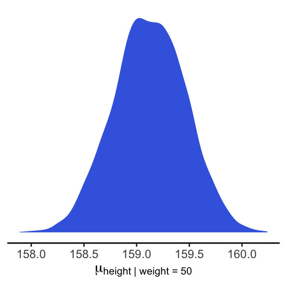
We’ll use mean_hdi() to get both 89% and 95% HPDIs along with the mean.
mean_hdi(mu_at_50[,1], .width = c(.89, .95))## y ymin ymax .width .point .interval
## 1 159.1232 158.5914 159.6856 0.89 mean hdi
## 2 159.1232 158.4501 159.7652 0.95 mean hdiIf you wanted to express those sweet 95% HPDIs on your density plot, you might use tidybayes::stat_pointintervalh(). Since stat_pointintervalh() also returns a point estimate, we’ll throw in the mode.
mu_at_50 %>%
ggplot(aes(x = mu_at_50)) +
geom_density(size = 0, fill = "royalblue") +
stat_pointintervalh(aes(y = 0),
point_interval = mode_hdi, .width = .95) +
scale_y_continuous(NULL, breaks = NULL) +
labs(x = expression(mu["height | weight = 50"])) +
theme_classic()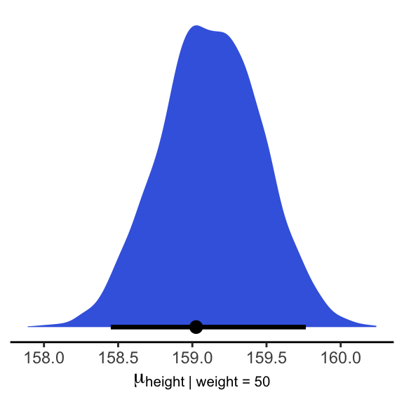
In brms, you would use fitted() to do what McElreath accomplished with link().
mu <- fitted(b4.3, summary = F)
str(mu)## num [1:4000, 1:352] 157 157 158 158 157 ...When you specify summary = F, fitted() returns a matrix of values with as many rows as there were post-warmup iterations across your HMC chains and as many columns as there were cases in your data. Because we had 4000 post-warmup iterations and \(n\) = 352, fitted() returned a matrix of 4000 rows and 352 vectors. If you omitted the summary = F argument, the default is TRUE and fitted() will return summary information instead.
Much like rethinking’s link(), fitted() can accommodate custom predictor values with its newdata argument.
weight_seq <- tibble(weight = seq(from = 25, to = 70, by = 1))
mu <-
fitted(b4.3,
summary = F,
newdata = weight_seq) %>%
as_tibble() %>%
# here we name the columns after the `weight` values from which they were computed
set_names(25:70) %>%
mutate(iter = 1:n())
str(mu)Anticipating ggplot2, we went ahead and converted the output to a tibble. But we might do a little more data processing with the aid of tidyr::gather(). With the gather() function, we’ll convert the data from the wide format to the long format. If you’re new to the distinction between wide and long data, you can learn more here or here.
mu <-
mu %>%
gather(weight, height, -iter) %>%
# We might reformat `weight` to numerals
mutate(weight = as.numeric(weight))
head(mu)## # A tibble: 6 x 3
## iter weight height
## <int> <dbl> <dbl>
## 1 1 25 136.
## 2 2 25 136.
## 3 3 25 137.
## 4 4 25 136.
## 5 5 25 135.
## 6 6 25 138.Enough data processing. Here we reproduce McElreath’s Figure 4.7.a.
d2 %>%
ggplot(aes(x = weight, y = height)) +
geom_point(data = mu %>% filter(iter < 101),
alpha = .1)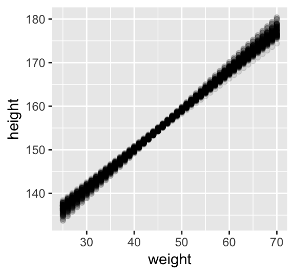
# or prettied up a bit
d2 %>%
ggplot(aes(x = weight, y = height)) +
geom_point(data = mu %>% filter(iter < 101),
color = "navyblue", alpha = .05) +
theme(text = element_text(family = "Times"),
panel.grid = element_blank())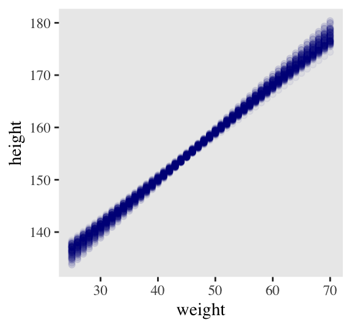
With fitted(), it’s quite easy to plot a regression line and its intervals. Just omit the summary = T argument.
mu_summary <-
fitted(b4.3,
newdata = weight_seq) %>%
as_tibble() %>%
# let's tack on the `weight` values from `weight_seq`
bind_cols(weight_seq)
head(mu_summary)## # A tibble: 6 x 5
## Estimate Est.Error Q2.5 Q97.5 weight
## <dbl> <dbl> <dbl> <dbl> <dbl>
## 1 137. 0.864 135. 138. 25
## 2 137. 0.825 136. 139. 26
## 3 138. 0.786 137. 140. 27
## 4 139. 0.747 138. 141. 28
## 5 140. 0.709 139. 142. 29
## 6 141. 0.671 140. 142. 30Here it is, our analogue to Figure 4.7.b.
d2 %>%
ggplot(aes(x = weight, y = height)) +
geom_smooth(data = mu_summary,
aes(y = Estimate, ymin = Q2.5, ymax = Q97.5),
stat = "identity",
fill = "grey70", color = "black", alpha = 1, size = 1/2) +
geom_point(color = "navyblue", shape = 1, size = 1.5, alpha = 2/3) +
coord_cartesian(xlim = range(d2$weight)) +
theme(text = element_text(family = "Times"),
panel.grid = element_blank())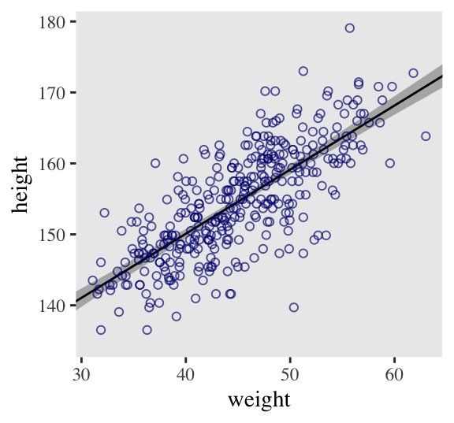
And if you wanted to use intervals other than the default 95% ones, you’d enter a probs argument like this: fitted(b4.3, newdata = weight.seq, probs = c(.25, .75)). The resulting third and fourth vectors from the fitted() object would be named Q25 and Q75 instead of the default Q2.5 and Q97.5. The Q prefix stands for quantile.
4.4.3.4.1 Overthinking: How link fitted() works.
Similar to rethinking::link(), brms::fitted() uses the formula from your model to compute the model expectations for a given set of predictor values. I use it a lot in this project. If you follow along, you’ll get a good handle on it.
4.4.3.5 Prediction intervals.
Even though our full statistical model (omitting priors for the sake of simplicity) is
\[h_i \sim \text{Normal}(\mu_i = \alpha + \beta x_, \sigma)\]
we’ve only been plotting the \(\mu\) part. In order to bring in the variability expressed by \(\sigma\), we’ll have to switch to predict(). Much as brms::fitted() was our analogue to rethinking::link(), brms::predict() is our analogue to rethinking::sim().
We can reuse our weight_seq data from before. But in case you forgot, here’s that code again.
weight_seq <- tibble(weight = seq(from = 25, to = 70, by = 1))The predict() code looks a lot like what we used for fitted().
pred_height <-
predict(b4.3,
newdata = weight_seq) %>%
as_tibble() %>%
bind_cols(weight_seq)
pred_height %>%
slice(1:6)## # A tibble: 6 x 5
## Estimate Est.Error Q2.5 Q97.5 weight
## <dbl> <dbl> <dbl> <dbl> <dbl>
## 1 136. 5.24 126. 147. 25
## 2 137. 5.21 127. 148. 26
## 3 138. 5.25 128. 149. 27
## 4 139. 5.13 129. 149. 28
## 5 140. 5.15 130. 150. 29
## 6 141. 5.07 131. 151. 30This time the summary information in our data frame is for, as McElreath put it, “simulated heights, not distributions of plausible average height, \(\mu\)” (p. 108). Another way of saying that is that these simulations are the joint consequence of both \(\mu\) and \(\sigma\), unlike the results of fitted(), which only reflect \(\mu\). Our plot for Figure 4.8:
d2 %>%
ggplot(aes(x = weight)) +
geom_ribbon(data = pred_height,
aes(ymin = Q2.5, ymax = Q97.5),
fill = "grey83") +
geom_smooth(data = mu_summary,
aes(y = Estimate, ymin = Q2.5, ymax = Q97.5),
stat = "identity",
fill = "grey70", color = "black", alpha = 1, size = 1/2) +
geom_point(aes(y = height),
color = "navyblue", shape = 1, size = 1.5, alpha = 2/3) +
coord_cartesian(xlim = range(d2$weight),
ylim = range(d2$height)) +
theme(text = element_text(family = "Times"),
panel.grid = element_blank())
4.5 Polynomial regression
Remember d?
d %>%
glimpse()## Observations: 544
## Variables: 4
## $ height <dbl> 151.7650, 139.7000, 136.5250, 156.8450, 145.4150, 163.8300, 149.2250, 168.9100, 14…
## $ weight <dbl> 47.82561, 36.48581, 31.86484, 53.04191, 41.27687, 62.99259, 38.24348, 55.47997, 34…
## $ age <dbl> 63.0, 63.0, 65.0, 41.0, 51.0, 35.0, 32.0, 27.0, 19.0, 54.0, 47.0, 66.0, 73.0, 20.0…
## $ male <int> 1, 0, 0, 1, 0, 1, 0, 1, 0, 1, 0, 1, 0, 0, 0, 1, 1, 0, 1, 0, 0, 1, 0, 1, 0, 1, 0, 0…The quadratic is probably the most commonly used polynomial regression model.
\[\mu = \alpha + \beta_1 x_i + \beta_2 x_i^2\]
McElreath warned: “Fitting these models to data is easy. Interpreting them can be hard” (p. 111). Standardizing will help brm() fit the model. We might standardize our weight variable like so.
d <-
d %>%
mutate(weight_s = (weight - mean(weight)) / sd(weight))Here’s the quadratic model in brms.
b4.5 <-
brm(data = d, family = gaussian,
height ~ 1 + weight_s + I(weight_s^2),
prior = c(prior(normal(178, 100), class = Intercept),
prior(normal(0, 10), class = b),
prior(cauchy(0, 1), class = sigma)),
iter = 2000, warmup = 1000, chains = 4, cores = 4,
seed = 4)plot(b4.5)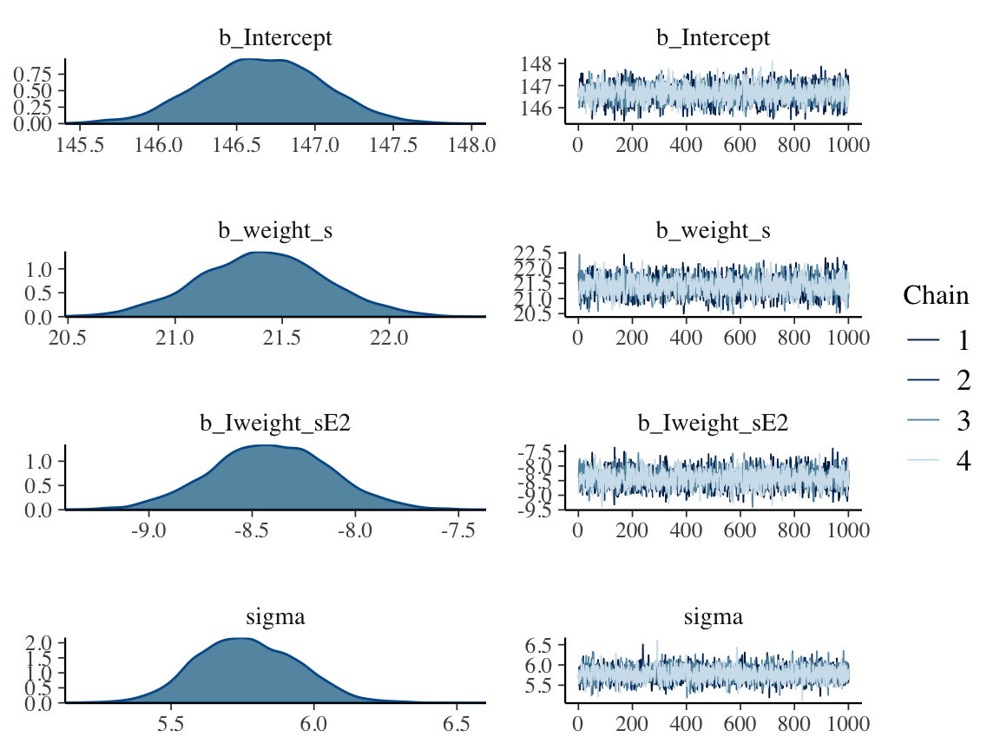
print(b4.5)## Family: gaussian
## Links: mu = identity; sigma = identity
## Formula: height ~ 1 + weight_s + I(weight_s^2)
## Data: d (Number of observations: 544)
## Samples: 4 chains, each with iter = 2000; warmup = 1000; thin = 1;
## total post-warmup samples = 4000
##
## Population-Level Effects:
## Estimate Est.Error l-95% CI u-95% CI Eff.Sample Rhat
## Intercept 146.66 0.39 145.90 147.40 3924 1.00
## weight_s 21.41 0.29 20.83 21.99 2886 1.00
## Iweight_sE2 -8.41 0.29 -8.98 -7.85 3606 1.00
##
## Family Specific Parameters:
## Estimate Est.Error l-95% CI u-95% CI Eff.Sample Rhat
## sigma 5.77 0.18 5.44 6.11 4089 1.00
##
## Samples were drawn using sampling(NUTS). For each parameter, Eff.Sample
## is a crude measure of effective sample size, and Rhat is the potential
## scale reduction factor on split chains (at convergence, Rhat = 1).Our quadratic plot requires new fitted()- and predict()-oriented wrangling.
weight_seq <- tibble(weight_s = seq(from = -2.5, to = 2.5, length.out = 30))
f_quad <-
fitted(b4.5,
newdata = weight_seq) %>%
as_tibble() %>%
bind_cols(weight_seq)
p_quad <-
predict(b4.5,
newdata = weight_seq) %>%
as_tibble() %>%
bind_cols(weight_seq) Behold the code for our version of Figure 4.9.a. You’ll notice how little the code changed from that for Figure 4.8, above.
ggplot(data = d,
aes(x = weight_s)) +
geom_ribbon(data = p_quad,
aes(ymin = Q2.5, ymax = Q97.5),
fill = "grey83") +
geom_smooth(data = f_quad,
aes(y = Estimate, ymin = Q2.5, ymax = Q97.5),
stat = "identity",
fill = "grey70", color = "black", alpha = 1, size = 1/2) +
geom_point(aes(y = height),
color = "navyblue", shape = 1, size = 1.5, alpha = 1/3) +
coord_cartesian(xlim = range(d$weight_s)) +
theme(text = element_text(family = "Times"),
panel.grid = element_blank())
From a formula perspective, the cubic model is a simple extenstion of the quadratic:
\[\mu = \alpha + \beta_1 x_i + \beta_2 x_i^2 + \beta_3 x_i^3\]
Fit it like so.
b4.6 <-
brm(data = d, family = gaussian,
height ~ 1 + weight_s + I(weight_s^2) + I(weight_s^3),
prior = c(prior(normal(178, 100), class = Intercept),
prior(normal(0, 10), class = b),
prior(cauchy(0, 1), class = sigma)),
iter = 2000, warmup = 1000, chains = 4, cores = 4,
seed = 4)And now we’ll fit the good old linear model.
b4.7 <-
brm(data = d, family = gaussian,
height ~ 1 + weight_s,
prior = c(prior(normal(178, 100), class = Intercept),
prior(normal(0, 10), class = b),
prior(cauchy(0, 1), class = sigma)),
iter = 2000, warmup = 1000, chains = 4, cores = 4,
seed = 4)Here’s the fitted(), predict(), and ggplot2 code for Figure 4.9.c, the cubic model.
f_cub <-
fitted(b4.6,
newdata = weight_seq) %>%
as_tibble() %>%
bind_cols(weight_seq)
p_cub <-
predict(b4.6,
newdata = weight_seq) %>%
as_tibble() %>%
bind_cols(weight_seq)
ggplot(data = d,
aes(x = weight_s)) +
geom_ribbon(data = p_cub,
aes(ymin = Q2.5, ymax = Q97.5),
fill = "grey83") +
geom_smooth(data = f_cub,
aes(y = Estimate, ymin = Q2.5, ymax = Q97.5),
stat = "identity",
fill = "grey70", color = "black", alpha = 1, size = 1/4) +
geom_point(aes(y = height),
color = "navyblue", shape = 1, size = 1.5, alpha = 1/3) +
coord_cartesian(xlim = range(d$weight_s)) +
theme(text = element_text(family = "Times"),
panel.grid = element_blank())And here’s the fitted(), predict(), and ggplot2 code for Figure 4.9.a, the linear model.
f_line <-
fitted(b4.7,
newdata = weight_seq) %>%
as_tibble() %>%
bind_cols(weight_seq)
p_line <-
predict(b4.7,
newdata = weight_seq) %>%
as_tibble() %>%
bind_cols(weight_seq)
ggplot(data = d,
aes(x = weight_s)) +
geom_ribbon(data = p_line,
aes(ymin = Q2.5, ymax = Q97.5),
fill = "grey83") +
geom_smooth(data = f_line,
aes(y = Estimate, ymin = Q2.5, ymax = Q97.5),
stat = "identity",
fill = "grey70", color = "black", alpha = 1, size = 1/4) +
geom_point(aes(y = height),
color = "navyblue", shape = 1, size = 1.5, alpha = 1/3) +
coord_cartesian(xlim = range(d$weight_s)) +
theme(text = element_text(family = "Times"),
panel.grid = element_blank())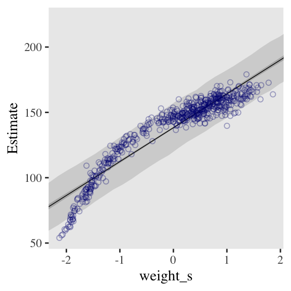
4.5.0.0.1 Overthinking: Converting back to natural scale.
You can apply McElreath’s conversion trick within the ggplot2 environment, too. Here it is with the cubic model.
at <- c(-2, -1, 0, 1, 2)
ggplot(data = d,
aes(x = weight_s)) +
geom_ribbon(data = p_line,
aes(ymin = Q2.5, ymax = Q97.5),
fill = "grey83") +
geom_smooth(data = f_line,
aes(y = Estimate, ymin = Q2.5, ymax = Q97.5),
stat = "identity",
fill = "grey70", color = "black", alpha = 1, size = 1/4) +
geom_point(aes(y = height),
color = "navyblue", shape = 1, size = 1.5, alpha = 1/3) +
coord_cartesian(xlim = range(d$weight_s)) +
theme(text = element_text(family = "Times"),
panel.grid = element_blank()) +
# here it is!
scale_x_continuous("standardized weight converted back",
breaks = at,
labels = round(at * sd(d$weight) + mean(d$weight), 1))
Session info
sessionInfo()## R version 3.5.1 (2018-07-02)
## Platform: x86_64-apple-darwin15.6.0 (64-bit)
## Running under: macOS High Sierra 10.13.6
##
## Matrix products: default
## BLAS: /Library/Frameworks/R.framework/Versions/3.5/Resources/lib/libRblas.0.dylib
## LAPACK: /Library/Frameworks/R.framework/Versions/3.5/Resources/lib/libRlapack.dylib
##
## locale:
## [1] en_US.UTF-8/en_US.UTF-8/en_US.UTF-8/C/en_US.UTF-8/en_US.UTF-8
##
## attached base packages:
## [1] grid parallel stats graphics grDevices utils datasets methods base
##
## other attached packages:
## [1] tidybayes_1.0.4 brms_2.8.8 Rcpp_1.0.1 rstan_2.18.2
## [5] StanHeaders_2.18.0-1 forcats_0.3.0 stringr_1.4.0 dplyr_0.8.0.1
## [9] purrr_0.2.5 readr_1.1.1 tidyr_0.8.1 tibble_2.1.1
## [13] ggplot2_3.1.1 tidyverse_1.2.1
##
## loaded via a namespace (and not attached):
## [1] colorspace_1.3-2 ggridges_0.5.0 rsconnect_0.8.8
## [4] rprojroot_1.3-2 ggstance_0.3 markdown_0.8
## [7] base64enc_0.1-3 rstudioapi_0.7 svUnit_0.7-12
## [10] DT_0.4 fansi_0.4.0 mvtnorm_1.0-10
## [13] lubridate_1.7.4 xml2_1.2.0 bridgesampling_0.6-0
## [16] knitr_1.20 shinythemes_1.1.1 bayesplot_1.6.0
## [19] jsonlite_1.5 LaplacesDemon_16.1.1 broom_0.5.1
## [22] shiny_1.1.0 compiler_3.5.1 httr_1.3.1
## [25] backports_1.1.4 assertthat_0.2.0 Matrix_1.2-14
## [28] lazyeval_0.2.2 cli_1.0.1 later_0.7.3
## [31] htmltools_0.3.6 prettyunits_1.0.2 tools_3.5.1
## [34] igraph_1.2.1 coda_0.19-2 gtable_0.3.0
## [37] glue_1.3.1.9000 reshape2_1.4.3 cellranger_1.1.0
## [40] nlme_3.1-137 crosstalk_1.0.0 xfun_0.3
## [43] ps_1.2.1 rvest_0.3.2 mime_0.5
## [46] miniUI_0.1.1.1 gtools_3.8.1 MASS_7.3-50
## [49] zoo_1.8-2 scales_1.0.0 colourpicker_1.0
## [52] hms_0.4.2 promises_1.0.1 Brobdingnag_1.2-6
## [55] inline_0.3.15 shinystan_2.5.0 yaml_2.1.19
## [58] gridExtra_2.3 loo_2.1.0 stringi_1.4.3
## [61] dygraphs_1.1.1.5 pkgbuild_1.0.2 rlang_0.3.4
## [64] pkgconfig_2.0.2 matrixStats_0.54.0 HDInterval_0.2.0
## [67] evaluate_0.10.1 lattice_0.20-35 rstantools_1.5.1
## [70] htmlwidgets_1.2 labeling_0.3 processx_3.2.1
## [73] tidyselect_0.2.5 plyr_1.8.4 magrittr_1.5
## [76] bookdown_0.9 R6_2.3.0 generics_0.0.2
## [79] pillar_1.3.1 haven_1.1.2 withr_2.1.2
## [82] xts_0.10-2 abind_1.4-5 modelr_0.1.2
## [85] crayon_1.3.4 arrayhelpers_1.0-20160527 utf8_1.1.4
## [88] rmarkdown_1.10 readxl_1.1.0 callr_3.1.0
## [91] threejs_0.3.1 digest_0.6.18 xtable_1.8-2
## [94] httpuv_1.4.4.2 stats4_3.5.1 munsell_0.5.0
## [97] viridisLite_0.3.0 shinyjs_1.0